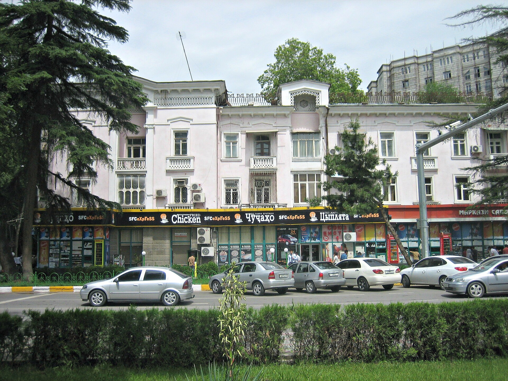

Таджикистан рассматривает выход из Международного уголовного суда
Нижняя палата рассмотрела проект резолюции 16 сентября; повод — ордер МУС на арест Путина.

16 сентября нижняя палата парламента Таджикистана на внеочередной сессии рассмотрела проект резолюции о выходе из Международного уголовного суда (МУС). Пресс-служба парламента сообщила лишь, что «приняты соответствующие решения».
Повод: ордер на Путина
Вероятная причина — президент России Владимир Путин. В октябре 2025 года Душанбе принял его на саммите Россия–Центральная Азия, несмотря на ордер МУС на арест.
Почему был выдан ордер
МУС выдал ордер в марте 2023 года из-за незаконной депортации украинских детей. Перед визитом таджикские власти заявили суду, что не будут его исполнять; Палата предварительного производства МУС отклонила эти доводы 19 марта 2026 года и передала вопрос Ассамблее государств-участников в мае.
Процедура выхода
Согласно статье 127 Римского статута, выход вступает в силу через год после письменного уведомления генсека ООН. В договорной базе ООН Таджикистан по-прежнему числится государством-участником.
Коротко
- Парламент рассмотрел: 16 сентября 2026
- Визит Путина: октябрь 2025 (Душанбе)
- Ордер МУС: март 2023
- Выход: вступит в силу через 1 год